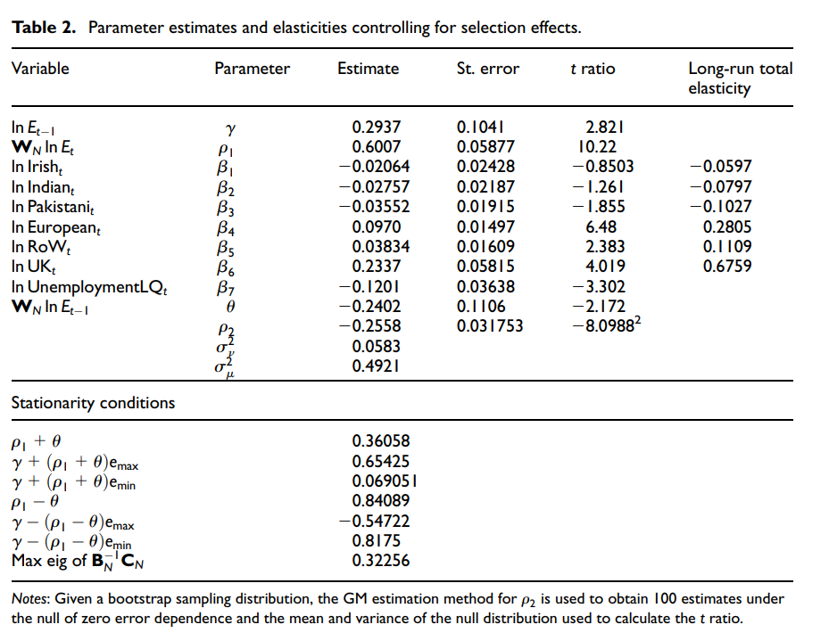

pkgs <- c("sf", "mapview", "spdep", "spatialreg", "tmap", "viridisLite",
"plm", "splm", "SDPDmod")
lapply(pkgs, require, character.only = TRUE)10 Spatio-temporal models
11 Comparing and Selecting Models
Required packages
Session info
sessionInfo()R version 4.3.1 (2023-06-16 ucrt)
Platform: x86_64-w64-mingw32/x64 (64-bit)
Running under: Windows 10 x64 (build 19044)
Matrix products: default
locale:
[1] LC_COLLATE=English_United Kingdom.utf8
[2] LC_CTYPE=English_United Kingdom.utf8
[3] LC_MONETARY=English_United Kingdom.utf8
[4] LC_NUMERIC=C
[5] LC_TIME=English_United Kingdom.utf8
time zone: Europe/London
tzcode source: internal
attached base packages:
[1] stats graphics grDevices utils datasets methods
[7] base
other attached packages:
[1] SDPDmod_0.0.3 splm_1.6-2 plm_2.6-3
[4] viridisLite_0.4.2 tmap_3.3-3 spatialreg_1.2-9
[7] Matrix_1.5-4.1 spdep_1.2-8 spData_2.2.2
[10] mapview_2.11.0 sf_1.0-13
loaded via a namespace (and not attached):
[1] tidyselect_1.2.0 dplyr_1.1.2 fastmap_1.1.1
[4] leaflet_2.1.2 TH.data_1.1-2 dotCall64_1.0-2
[7] XML_3.99-0.14 digest_0.6.31 lifecycle_1.0.3
[10] LearnBayes_2.15.1 survival_3.5-5 terra_1.7-29
[13] magrittr_2.0.3 compiler_4.3.1 rlang_1.1.1
[16] tools_4.3.1 utf8_1.2.3 collapse_1.9.6
[19] knitr_1.43 htmlwidgets_1.6.2 sp_1.6-1
[22] classInt_0.4-9 RColorBrewer_1.1-3 multcomp_1.4-24
[25] abind_1.4-5 KernSmooth_2.23-21 expm_0.999-7
[28] leafsync_0.1.0 grid_4.3.1 stats4_4.3.1
[31] fansi_1.0.4 xtable_1.8-4 lfe_2.9-0
[34] e1071_1.7-13 leafem_0.2.0 colorspace_2.1-0
[37] scales_1.2.1 MASS_7.3-60 dichromat_2.0-0.1
[40] cli_3.6.1 mvtnorm_1.2-2 rmarkdown_2.22
[43] miscTools_0.6-28 generics_0.1.3 RSpectra_0.16-1
[46] tmaptools_3.1-1 bdsmatrix_1.3-6 DBI_1.1.3
[49] proxy_0.4-27 ibdreg_0.3.8 splines_4.3.1
[52] stars_0.6-1 parallel_4.3.1 s2_1.1.4
[55] base64enc_0.1-3 vctrs_0.6.3 boot_1.3-28.1
[58] webshot_0.5.4 sandwich_3.0-2 jsonlite_1.8.5
[61] Formula_1.2-5 crosstalk_1.2.0 units_0.8-2
[64] spam_2.9-1 glue_1.6.2 lwgeom_0.2-13
[67] codetools_0.2-19 deldir_1.0-9 raster_3.6-20
[70] lmtest_0.9-40 munsell_0.5.0 tibble_3.2.1
[73] pillar_1.9.0 htmltools_0.5.5 satellite_1.0.4
[76] R6_2.5.1 maxLik_1.5-2 wk_0.7.3
[79] Rdpack_2.4 evaluate_0.21 lattice_0.21-8
[82] rbibutils_2.2.13 png_0.1-8 class_7.3-22
[85] Rcpp_1.0.10 coda_0.19-4 nlme_3.1-162
[88] xfun_0.39 zoo_1.8-12 pkgconfig_2.0.3 Elhorst (2014) provides a comprehensive introduction to spatial panel data methods. Article length introduction to spatial panel data models (FE and RE) can be found in Elhorst (2012), Millo and Piras (2012) and Croissant and Millo (2018). LeSage (2014) discusses Bayesian panel data methods.
Note that we will only discuss some basics here, as the complete econometrics of these models and their estimation strategy become insanely complicated (Lee and Yu 2010).
11.1 Static panel data models
The idea behind a static panel data with auto-regressive term is similar to the cross sectional situation (Millo and Piras 2012).
\[ {\boldsymbol{\mathbf{y}}}= +\rho(\boldsymbol{\mathbf{I}}_T\otimes {\boldsymbol{\mathbf{W}}_N}){\boldsymbol{\mathbf{y}}}+{\boldsymbol{\mathbf{X}}}{\boldsymbol{\mathbf{\beta}}}+ {\boldsymbol{\mathbf{u}}}. \]
where \(\otimes\) is the Kronecker product (block-wise multiplication).
\[ \begin{split} \underbrace{\underbrace{\boldsymbol{\mathbf{I}}_T}_{T \times T} \otimes \underbrace{\boldsymbol{\mathbf{W}}_N}_{N \times N}}_{NT \times NT}= \begin{pmatrix} 1 & 0 & \cdots & 0 \\ 0 & 1 & \cdots & 0 \\ \vdots & \vdots & \ddots & \vdots \\ 0 & 0 & \cdots & 1 \end{pmatrix} \left[\begin{array}{cccc} v_{1} w_{1} & v_{1} w_{2} & \cdots & v_{1} w_{m} \\ v_{2} w_{1} & v_{2} w_{2} & \cdots & v_{2} w_{m} \\ \vdots & \vdots & \ddots & \vdots \\ v_{n} w_{1} & v_{n} w_{2} & \cdots & v_{n} w_{m} \end{array}\right] =\\ \begin{pmatrix} \left[\begin{array}{cccc} v_{1} w_{1} & v_{1} w_{2} & \cdots & v_{1} w_{m} \\ v_{2} w_{1} & v_{2} w_{2} & \cdots & v_{2} w_{m} \\ \vdots & \vdots & \ddots & \vdots \\ v_{n} w_{1} & v_{n} w_{2} & \cdots & v_{n} w_{m} \end{array}\right] & 0 & \cdots & 0 \\ 0 & \left[\begin{array}{cccc} v_{1} w_{1} & v_{1} w_{2} & \cdots & v_{1} w_{m} \\ v_{2} w_{1} & v_{2} w_{2} & \cdots & v_{2} w_{m} \\ \vdots & \vdots & \ddots & \vdots \\ v_{n} w_{1} & v_{n} w_{2} & \cdots & v_{n} w_{m} \end{array}\right] & \cdots & 0 \\ \vdots & \vdots & \ddots & \vdots \\ 0 & 0 & \cdots & \left[\begin{array}{cccc} v_{1} w_{1} & v_{1} w_{2} & \cdots & v_{1} w_{m} \\ v_{2} w_{1} & v_{2} w_{2} & \cdots & v_{2} w_{m} \\ \vdots & \vdots & \ddots & \vdots \\ v_{n} w_{1} & v_{n} w_{2} & \cdots & v_{n} w_{m} \end{array}\right] \end{pmatrix} \end{split} \]
Here we model only spatial dependence within each cross-section and multiply the same spatial weights matrix \(T\) times. Off block-diagonal elements are all zero. So there is no spatial dependence that goes across time.
The error term can be decomposed into two parts:
\[ {\boldsymbol{\mathbf{u}}}= (\boldsymbol{\mathbf{\iota}}_T \otimes {\boldsymbol{\mathbf{I}}_N})\boldsymbol{\mathbf{\mu}}+ {\boldsymbol{\mathbf{\nu}}}, \]
where \(\boldsymbol{\mathbf{\iota}}_T\) is a \(T \times 1\) vector of ones, \({\boldsymbol{\mathbf{I}}_N}\) an \(N \times N\) identity matrix, \(\boldsymbol{\mathbf{\mu}}\) is a vector of time-invariant individual specific effects (not spatially autocorrelated).
We could obviously extent the specification to allow for error correlation by specifying
\[ {\boldsymbol{\mathbf{\nu}}}= \lambda(\boldsymbol{\mathbf{I}}_T \otimes {\boldsymbol{\mathbf{W}}_N})\boldsymbol{\mathbf{\nu }}+ {\boldsymbol{\mathbf{\varepsilon}}}. \]
The individual effects can be treated as fixed or random.
Fixed Effects
In the FE model, the individual specific effects are treated as fixed. If we re-write the equation above, we derive at the well-know fixed effects formula with an additional spatial autoregressive term:
\[ {y_{it}}= \rho\sum_{j=1}^Nw_{ij}y_{jt} + \boldsymbol{\mathbf{x}}_{it}\boldsymbol{\mathbf{\beta }}+ \mu_i + \nu_{it}, \] where \(\mu_i\) denote the individual-specific fixed effects.
As with the standard spatial lag model, we cannot rely on the OLS estimator because of the simultaneity problem. The coefficients are thus estimated by maximum likelihood (Elhorst 2014).
Random Effects
In the RE model, the individual specific effects are treated as components of the error \(\mu \sim \mathrm{IID}(o, \sigma_\mu^2)\). The model can then be written as
\[ \begin{split} {\boldsymbol{\mathbf{y}}}= +\rho(\boldsymbol{\mathbf{I}}_T\otimes {\boldsymbol{\mathbf{W}}_N}){\boldsymbol{\mathbf{y}}}+{\boldsymbol{\mathbf{X}}}{\boldsymbol{\mathbf{\beta}}}+ {\boldsymbol{\mathbf{u}}}, \\ {\boldsymbol{\mathbf{u}}}= (\boldsymbol{\mathbf{\iota}}_T \otimes {\boldsymbol{\mathbf{I}}_N})\boldsymbol{\mathbf{\mu}}+ [\boldsymbol{\mathbf{I}}_T \otimes (\boldsymbol{\mathbf{I}}_N - \lambda{\boldsymbol{\mathbf{W}}_N})]^{-1} {\boldsymbol{\mathbf{\varepsilon}}}. \end{split} \]
As with the conventional random effects model, we make the strong assumption that the unobserved individual effects are uncorrelated with the covariates \(\boldsymbol{\mathbf{X}}\) in the model.
11.2 Dynamic panel data models
Relying on panel data and repeated measures over time, comes with an additional layer of dependence / autocorrelation between units. We have spatial dependence (with its three potential sources), and we have temporal/serial dependence within each unit over time.
A general dynamic model would account for all sources of potential dependence, including combinations (Elhorst 2012). The most general model can be written as:
\[ \begin{split} {\boldsymbol{\mathbf{y}}_t}=& \tau \boldsymbol{\mathbf{y}}_{t-1} + \rho(\boldsymbol{\mathbf{I}}_T\otimes {\boldsymbol{\mathbf{W}}_N}){\boldsymbol{\mathbf{y}}}_t + \gamma(\boldsymbol{\mathbf{I}}_T\otimes {\boldsymbol{\mathbf{W}}_N}){\boldsymbol{\mathbf{y}}_{t-1}}\\ &~+ {\boldsymbol{\mathbf{X}}}{\boldsymbol{\mathbf{\beta}}}+ (\boldsymbol{\mathbf{I}}_T\otimes {\boldsymbol{\mathbf{W}}_N}){\boldsymbol{\mathbf{X}}}{\boldsymbol{\mathbf{\theta}}}+ {\boldsymbol{\mathbf{u}}}_t,\\ {\boldsymbol{\mathbf{u}}_t}=& + (\boldsymbol{\mathbf{\iota}}_T \otimes {\boldsymbol{\mathbf{I}}_N})\boldsymbol{\mathbf{\mu}}+ {\boldsymbol{\mathbf{\nu}}_t},\\ {\boldsymbol{\mathbf{\nu}}_t}=& \psi{\boldsymbol{\mathbf{\nu}}}_{t-1} + \lambda(\boldsymbol{\mathbf{I}}_T \otimes {\boldsymbol{\mathbf{W}}_N})\boldsymbol{\mathbf{\nu }}+ {\boldsymbol{\mathbf{\varepsilon}}}, \end{split} \]
Where \({\boldsymbol{\mathbf{X}}}\) could further contain time-lagged covariates. Compared to the static spatial panel model, we have introduced temporal dependency in the outcome \(\tau \boldsymbol{\mathbf{y}}_{t-1}\) and the spatially lagged outcome \(\gamma(\boldsymbol{\mathbf{I}}_T\otimes {\boldsymbol{\mathbf{W}}_N}){\boldsymbol{\mathbf{y}}_{t-1}}\), and in the error term \(\psi{\boldsymbol{\mathbf{\nu}}}_{t-1}\).
11.2.1 Impacts in spatial panel models
Note that similar to the distinction between local and global spillovers, we now have to distinguish between short-term and long-term effects. A change in \(\boldsymbol{\mathbf{X}}_t\) no influences focal \(Y\) and neighbour’s \(Y\) but also contemporaneous \(Y\) and future \(Y\).
While the short-term effects are the known impacts
\[ \frac{\partial {\boldsymbol{\mathbf{y}}}}{\partial {\boldsymbol{\mathbf{x}}}_k} = ({\boldsymbol{\mathbf{I}}}-\rho{\boldsymbol{\mathbf{W}}_{NT}})^{-1}\left[\beta_k+{\boldsymbol{\mathbf{W}}_{NT}}\theta_k\right]. \]
The long-term impacts, by contrast, additionally account for the effect multiplying through time
\[ \frac{\partial {\boldsymbol{\mathbf{y}}}}{\partial {\boldsymbol{\mathbf{x}}}_k} = [(1-\tau){\boldsymbol{\mathbf{I}}}-(\rho+\gamma){\boldsymbol{\mathbf{W}}_{NT}}]^{-1}\left[\beta_k+{\boldsymbol{\mathbf{W}}_{NT}}\theta_k\right]. \]
For more information see Elhorst (2012).

11.3 Example: Local employment impacts of immigration
Fingleton, Olner, and Pryce (2020): Estimating the local employment impacts of immigration: A dynamic spatial panel model. Urban Studies, 57(13), 2646–2662. https://doi.org/10.1177/0042098019887916
This paper highlights a number of important gaps in the UK evidence base on the employment impacts of immigration, namely: (1) the lack of research on the local impacts of immigration – existing studies only estimate the impact for the country as a whole; (2) the absence of long-term estimates – research has focused on relatively short time spans – there are no estimates of the impact over several decades, for example; (3) the tendency to ignore spatial dependence of employment which can bias the results and distort inference – there are no robust spatial econometric estimates we are aware of.
We illustrate our approach with an application to London and find that no migrant group has a statistically significant long-term negative effect on employment. EU migrants, however, are found to have a significant positive impact, which may have important implications for the Brexit debate. Our approach opens up a new avenue of inquiry into subnational variations in the impacts of immigration on employment.

11.4 Estimation in R
To estimate spatial panel models in R, we can use the splm package of Millo and Piras (2012).
We use a standard example with longitudinal data from the plm package here.
data(Produc, package = "plm")
data(usaww)
head(Produc) state year region pcap hwy water util pc
1 ALABAMA 1970 6 15032.67 7325.80 1655.68 6051.20 35793.80
2 ALABAMA 1971 6 15501.94 7525.94 1721.02 6254.98 37299.91
3 ALABAMA 1972 6 15972.41 7765.42 1764.75 6442.23 38670.30
4 ALABAMA 1973 6 16406.26 7907.66 1742.41 6756.19 40084.01
5 ALABAMA 1974 6 16762.67 8025.52 1734.85 7002.29 42057.31
6 ALABAMA 1975 6 17316.26 8158.23 1752.27 7405.76 43971.71
gsp emp unemp
1 28418 1010.5 4.7
2 29375 1021.9 5.2
3 31303 1072.3 4.7
4 33430 1135.5 3.9
5 33749 1169.8 5.5
6 33604 1155.4 7.7usaww[1:10, 1:10] ALABAMA ARIZONA ARKANSAS CALIFORNIA COLORADO
ALABAMA 0.0 0.0000000 0 0.0 0.0
ARIZONA 0.0 0.0000000 0 0.2 0.2
ARKANSAS 0.0 0.0000000 0 0.0 0.0
CALIFORNIA 0.0 0.3333333 0 0.0 0.0
COLORADO 0.0 0.1428571 0 0.0 0.0
CONNECTICUT 0.0 0.0000000 0 0.0 0.0
DELAWARE 0.0 0.0000000 0 0.0 0.0
FLORIDA 0.5 0.0000000 0 0.0 0.0
GEORGIA 0.2 0.0000000 0 0.0 0.0
IDAHO 0.0 0.0000000 0 0.0 0.0
CONNECTICUT DELAWARE FLORIDA GEORGIA IDAHO
ALABAMA 0 0 0.25 0.25 0
ARIZONA 0 0 0.00 0.00 0
ARKANSAS 0 0 0.00 0.00 0
CALIFORNIA 0 0 0.00 0.00 0
COLORADO 0 0 0.00 0.00 0
CONNECTICUT 0 0 0.00 0.00 0
DELAWARE 0 0 0.00 0.00 0
FLORIDA 0 0 0.00 0.50 0
GEORGIA 0 0 0.20 0.00 0
IDAHO 0 0 0.00 0.00 0Produc contains data on US States Production - a panel of 48 observations from 1970 to 1986. usaww is a spatial weights matrix of the 48 continental US States based on the queen contiguity relation.
Let start with an FE SEM model, using function spml() for maximum likelihood estimation of static spatial panel models.
# Gen listw object
usalw <- mat2listw(usaww, style = "W")
# Spec formula
fm <- log(gsp) ~ log(pcap) + log(pc) + log(emp) + unemp
### Esimate FE SEM model
semfe.mod <- spml(formula = fm, data = Produc,
index = c("state", "year"), # ID column
listw = usalw, # listw
model = "within", # one of c("within", "random", "pooling").
effect = "individual", # type of fixed effects
lag = FALSE, # spatila lg of Y
spatial.error = "b", # "b" (Baltagi), "kkp" (Kapoor, Kelejian and Prucha)
method = "eigen", # estimation method, for large data e.g. ("spam", "Matrix" or "LU")
na.action = na.fail, # handling of missings
zero.policy = NULL) # handling of missings
summary(semfe.mod)Spatial panel fixed effects error model
Call:
spml(formula = fm, data = Produc, index = c("state", "year"),
listw = usalw, na.action = na.fail, model = "within", effect = "individual",
lag = FALSE, spatial.error = "b", method = "eigen", zero.policy = NULL)
Residuals:
Min. 1st Qu. Median 3rd Qu. Max.
-0.1246945 -0.0237699 -0.0034993 0.0170886 0.1882224
Spatial error parameter:
Estimate Std. Error t-value Pr(>|t|)
rho 0.557401 0.033075 16.853 < 2.2e-16 ***
Coefficients:
Estimate Std. Error t-value Pr(>|t|)
log(pcap) 0.0051438 0.0250109 0.2057 0.83705
log(pc) 0.2053026 0.0231427 8.8712 < 2e-16 ***
log(emp) 0.7822540 0.0278057 28.1328 < 2e-16 ***
unemp -0.0022317 0.0010709 -2.0839 0.03717 *
---
Signif. codes: 0 '***' 0.001 '**' 0.01 '*' 0.05 '.' 0.1 ' ' 1A RE SAR model, by contrast, can be estimated using the following options:
### Estimate an RE SAR model
sarre.mod <- spml(formula = fm, data = Produc,
index = c("state", "year"), # ID column
listw = usalw, # listw
model = "random", # one of c("within", "random", "pooling").
effect = "individual", # type of fixed effects
lag = TRUE, # spatila lg of Y
spatial.error = "none", # "b" (Baltagi), "kkp" (Kapoor, Kelejian and Prucha)
method = "eigen", # estimation method, for large data e.g. ("spam", "Matrix" or "LU")
na.action = na.fail, # handling of missings
zero.policy = NULL) # handling of missings
summary(sarre.mod)ML panel with spatial lag, random effects
Call:
spreml(formula = formula, data = data, index = index, w = listw2mat(listw),
w2 = listw2mat(listw2), lag = lag, errors = errors, cl = cl,
method = "eigen", zero.policy = ..2)
Residuals:
Min. 1st Qu. Median Mean 3rd Qu. Max.
1.38 1.57 1.70 1.70 1.80 2.13
Error variance parameters:
Estimate Std. Error t-value Pr(>|t|)
phi 21.3175 8.2929 2.5706 0.01015 *
Spatial autoregressive coefficient:
Estimate Std. Error t-value Pr(>|t|)
lambda 0.161615 0.029042 5.5648 2.625e-08 ***
Coefficients:
Estimate Std. Error t-value Pr(>|t|)
(Intercept) 1.65814987 0.15071855 11.0016 < 2.2e-16 ***
log(pcap) 0.01294505 0.02493997 0.5190 0.6037
log(pc) 0.22555375 0.02163422 10.4258 < 2.2e-16 ***
log(emp) 0.67081074 0.02642113 25.3892 < 2.2e-16 ***
unemp -0.00579716 0.00089175 -6.5009 7.984e-11 ***
---
Signif. codes: 0 '***' 0.001 '**' 0.01 '*' 0.05 '.' 0.1 ' ' 1Note that Millo and Piras (2012) use a different notation, namely \(\lambda\) for lag dependence, and \(\rho\) for error dependence….
Again, we have to use an additional step to get impacts for SAR-like models.
# Number of years
T <- length(unique(Produc$year))
# impacts
sarre.mod.imp <- impacts(sarre.mod,
listw = usalw,
time = T)
summary(sarre.mod.imp) Impact measures (lag, trace):
Direct Indirect Total
log(pcap) 0.013028574 0.002411880 0.015440454
log(pc) 0.227009032 0.042024438 0.269033470
log(emp) 0.675138835 0.124983264 0.800122098
unemp -0.005834562 -0.001080108 -0.006914669
========================================================
Simulation results ( variance matrix):
Direct:
Iterations = 1:200
Thinning interval = 1
Number of chains = 1
Sample size per chain = 200
1. Empirical mean and standard deviation for each variable,
plus standard error of the mean:
Mean SD Naive SE Time-series SE
log(pcap) 0.012923 0.0256298 1.812e-03 1.812e-03
log(pc) 0.227705 0.0217875 1.541e-03 1.541e-03
log(emp) 0.674736 0.0271749 1.922e-03 1.922e-03
unemp -0.005823 0.0009813 6.939e-05 6.939e-05
2. Quantiles for each variable:
2.5% 25% 50% 75% 97.5%
log(pcap) -0.03487 -0.004762 0.011612 0.029624 0.064304
log(pc) 0.18616 0.212098 0.226047 0.243039 0.269157
log(emp) 0.62436 0.653502 0.675427 0.693538 0.724776
unemp -0.00770 -0.006473 -0.005803 -0.005178 -0.003932
========================================================
Indirect:
Iterations = 1:200
Thinning interval = 1
Number of chains = 1
Sample size per chain = 200
1. Empirical mean and standard deviation for each variable,
plus standard error of the mean:
Mean SD Naive SE Time-series SE
log(pcap) 0.002344 0.0049388 3.492e-04 3.419e-04
log(pc) 0.042946 0.0094980 6.716e-04 8.516e-04
log(emp) 0.127460 0.0270699 1.914e-03 1.669e-03
unemp -0.001096 0.0002835 2.004e-05 2.871e-05
2. Quantiles for each variable:
2.5% 25% 50% 75% 97.5%
log(pcap) -0.006488 -0.0007439 0.002108 0.005663 0.0113858
log(pc) 0.028376 0.0358110 0.042707 0.048986 0.0611002
log(emp) 0.082663 0.1067643 0.128823 0.144013 0.1872641
unemp -0.001708 -0.0012642 -0.001074 -0.000879 -0.0006663
========================================================
Total:
Iterations = 1:200
Thinning interval = 1
Number of chains = 1
Sample size per chain = 200
1. Empirical mean and standard deviation for each variable,
plus standard error of the mean:
Mean SD Naive SE Time-series SE
log(pcap) 0.015267 0.030473 2.155e-03 0.0021548
log(pc) 0.270652 0.027204 1.924e-03 0.0019236
log(emp) 0.802195 0.044628 3.156e-03 0.0027532
unemp -0.006919 0.001177 8.323e-05 0.0001051
2. Quantiles for each variable:
2.5% 25% 50% 75% 97.5%
log(pcap) -0.041245 -0.005507 0.014181 0.036224 0.07514
log(pc) 0.217658 0.251972 0.268672 0.288260 0.32091
log(emp) 0.723141 0.769504 0.801592 0.830554 0.90217
unemp -0.009325 -0.007703 -0.006883 -0.006126 -0.00477There is an alternative by using the package SDPDmod by Rozeta Simonovska (see vignette).
### FE SAR model
sarfe.mod2 <- SDPDm(formula = fm,
data = Produc,
W = usaww,
index = c("state","year"), # ID
model = "sar", # on of c("sar","sdm"),
effect = "individual", # FE structure
dynamic = FALSE, # time lags of the dependet variable
LYtrans = TRUE) # Lee-Yu transformation (bias correction)
summary(sarfe.mod2)sar panel model with individual fixed effects
Call:
SDPDm(formula = fm, data = Produc, W = usaww, index = c("state",
"year"), model = "sar", effect = "individual", dynamic = FALSE,
LYtrans = TRUE)
Spatial autoregressive coefficient:
Estimate Std. Error t-value Pr(>|t|)
rho 0.278598 0.023999 11.609 < 2.2e-16 ***
Coefficients:
Estimate Std. Error t-value Pr(>|t|)
log(pcap) -0.0468727 0.0262162 -1.7879 0.07379 .
log(pc) 0.1859441 0.0237251 7.8374 4.598e-15 ***
log(emp) 0.6230539 0.0305554 20.3910 < 2.2e-16 ***
unemp -0.0044700 0.0008917 -5.0129 5.362e-07 ***
---
Signif. codes: 0 '***' 0.001 '**' 0.01 '*' 0.05 '.' 0.1 ' ' 1And subsequently, we can calculate the impacts of the model.
# Impats
sarfe.mod2.imp <- impactsSDPDm(sarfe.mod2,
NSIM = 200, # N simulations
sd = 12345) # seed
summary(sarfe.mod2.imp)
Impact estimates for spatial (static) model
========================================================
Direct:
Estimate Std. Error t-value Pr(>|t|)
log(pcap) -0.04549036 0.02599130 -1.7502 0.08008 .
log(pc) 0.18809827 0.02383588 7.8914 2.988e-15 ***
log(emp) 0.63773076 0.03027063 21.0676 < 2.2e-16 ***
unemp -0.00459914 0.00089696 -5.1275 2.936e-07 ***
Indirect:
Estimate Std. Error t-value Pr(>|t|)
log(pcap) -0.01635880 0.00940186 -1.7400 0.08187 .
log(pc) 0.06724675 0.00991019 6.7856 1.156e-11 ***
log(emp) 0.22820595 0.02236869 10.2020 < 2.2e-16 ***
unemp -0.00164908 0.00037108 -4.4440 8.829e-06 ***
Total:
Estimate Std. Error t-value Pr(>|t|)
log(pcap) -0.0618492 0.0352540 -1.7544 0.07936 .
log(pc) 0.2553450 0.0313984 8.1324 4.208e-16 ***
log(emp) 0.8659367 0.0371925 23.2825 < 2.2e-16 ***
unemp -0.0062482 0.0012311 -5.0751 3.873e-07 ***
---
Signif. codes: 0 '***' 0.001 '**' 0.01 '*' 0.05 '.' 0.1 ' ' 1Note: I did not manage to estimate a dynamic panel model with SDPDm.
11.5 Example: Industrial facilities and municipal income
Rüttenauer and Best (2021): Environmental Inequality and Residential Sorting in Germany: A Spatial Time-Series Analysis of the Demographic Consequences of Industrial Sites. Demography, 58(6), 2243–2263. https://doi.org/10.1215/00703370-9563077